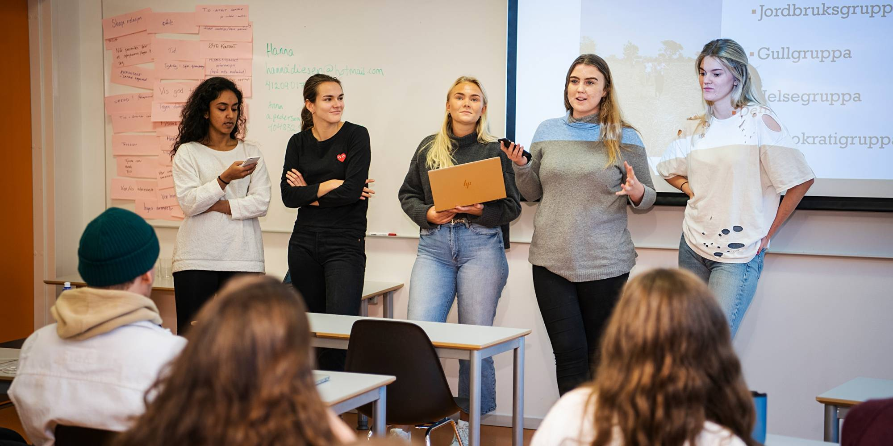

Prioritizing schoolwork
One of the most challanging aspects of becoming a student rather than a pupil, is that you have to
prioritize school work in a different way than you may be used to.
This may not be so easy to do with so many other things competing for your attention: a job, volunteer work,
extracurricular activities, exercise, friends and family, Facebook, Netflix, PlayStation. Success at
university is more about time on task than ‘natural ability’, and to stay on top of their schoolwork,
university students should plan on spending 2-3 hours per course unit per week on schoolwork
in addition to class time. To find the time needed, you will likely have to make sacrifices. Figure out how
many hours you can reasonably take on at work and stick to it.
You may need to get comfortable saying ‘no’ sometimes – to social invitations, requests for help, extra
shifts at work, your own worst instincts – but friends and family who care for you will understand. You will
need to start thinking of going out with friends, video games, TV, and social networking as rewards for a
job well done, rather than activities to do whenever.

Studying effectively

Transitioning from pupil to student, we have learned that it is important to not waste the time you have set
aside for schoolwork; spend that time productively!
Find a study environment that works for you, and turn your technology OFF. Many students find they are more
effective in the Library than at home, and research has shown that studying consistently, a little bit every
day, and reviewing material that you have already covered, is far more effective than cramming. As well,
studying by answering practice questions that you have either found or made up has been shown to be far more
effective than other study methods such as re-reading or summarizing. Consider finding study partners or
study groups to make up and answer questions with you, or just to increase your motivation to study!
Starting your schoolwork from the first day of class
With the excitement of the Fadderuka, and whole new possibilities for your social life, and with your first
midterm a long way off, it is easy to be lulled into feeling that you don’t need to do schoolwork in the
first few weeks of university. We have learned the hard way that you should not fall into this trap! Given
that you may need to study 24-36 hours per week or more, it’s much easier and more effective to put that
time in regularly from week 1 than to have to double- or triple-up on it in the two weeks leading up to
midterms, just to catch up.
Sleeping
8.5-9.25 nightly hours of sleep is recommended for university students aged 19-22, and students who get this
amount tend to do better than students who sleep less. Anything less compromises your ability to solve
problems, concentrate, and learn, not to mention your ability to show up to class and follow through on
study plans!